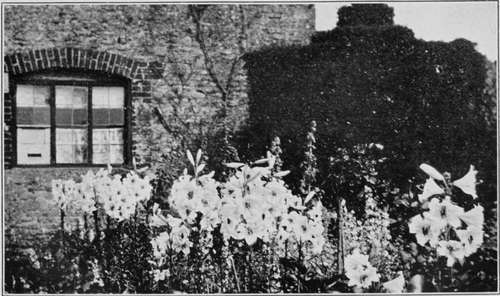

Chapter XIII. Bulb Potting, Etc
Description
This section is from the book "Town Gardening", by Mary Hampden. Also available from Amazon: Town Gardening.
Chapter XIII. Bulb Potting, Etc
List of Bulbs to Plant or Pot, with Instructions for Culture. Hyacinths in Glasses. Bulbs to Cultivate in Peat Fibre Mixture.
FREESIA potting is described in a previous chapter. It can be continued after July and August ; indeed, if done at fortnightly intervals until December a succession of blossoming ornaments will be gained.
There are so many excellent ways of using bulbs that all cannot be mentioned, but the town gardener may choose among the following suggestions.
Spring Snowflake (Leucojum Vernum)
Little white flowers, green-tipped. Plant three inches apart and two inches deep in rockery nooks, in August, September or October.
Summer Snowflake (Leucojum Aestivum)
A fine plant, with white bell-shaped flowers in May.
Eighteen inches. Plant four inches deep and four inches apart in good borders in August. September. October or November.
Roman Hyacinths. White
Pot bulbs, three in a five-inch pot of ordinary compost, one inch deep. Place pots in a cold frame, or on a cold greenhouse floor, or in boxes in a room. Cover them in with ashes until growth can just be seen breaking through. Then remove to window or greenhouse. No water is required till growth appears. Plant from August to December.
Italian Hyacinths
Blue and pink. Similar to Roman hyacinths, but coloured. Treat identically. The bulbs of these two classes of hyacinth should be thrown away after the flowers are over.
Hyacinths
Double and single hyacinths of all colours. Plant out of doors in November, three inches deep, eight inches apart. Lift bulbs and dry them off to store in June. Pot in November and December one bulb, with its tip just under the compost, in a six-inch pot, or three in a nine-inch. Cover as with Roman Hyacinths.
Tulip
Ordinary early, mid-early and late kinds, double or single, all colours. Plant out of doors in November, three or four inches deep, six or eight inches apart. Bulbs may be lifted when they have flowered and planted immediately in waste ground to complete their growth, or else must be left where they are till the foliage has all died down; then they should be lifted, dried off and stored. Pot these tulips, the earliest first, from September to December, four bulbs in a six-inch pot, tips just covered. Cover with cinders, as with Roman Hyacinths.
Hardy Tulips
The Darwin, Parrot, Cottage and other perennial tulips are all to be left in the ground, and make handsome colour groups in borders. Sharp cinders should be thrown over the soil above them each November in the worst town gardens.
Spanish Irises
Plant bulbs three inches deep, six inches apart, in sunny borders, from September to December. Cover the soil with ashes and old coco-nut fibre refuse. Leave in the ground ; they may thrive, and if they should fail bulbs are very cheap to replace them. Pot Spanish irises in October or November, five bulbs in a six-inch pot, or seven in an eight-inch, two inches deep. Treat like Freesias, that is to say, place the pots in frames or on cold greenhouse floor or attic shelf, scarcely ever giving water until growth appears. Then move into light, but do not attempt to force them in warm greenhouse until flower spikes are just beginning to be discernible as thickened shoots between the sword leaves.
Crown Imperials (Fritillaria Imperialis)
Plant, from September to December, one bulb in a six- or eight-inch pot of a compost of equal parts of loam, peat, leaf-mould, old manure chopped fine, and coarse sand, covering with about two inches of soil and laying the bulb slightly on its side to prevent water from lodging in its heart. The pots should be kept uncovered, in a cool place, until the growth is quite vigorous, and scarcely any water should be given in the early stages. Plant six inches apart in tubs, eight inches out of doors, and four inches deep.
Gladiolus Colvillei, The Bride
Plant, from October to December, in warm border, box-bed, window-boxes, rockeries or tubs, four inches deep, six inches apart. Mulch ground with very old manure and coarse sand mixed. Pot, October to March, one inch deep, five corms in a six-inch pot. Keep uncovered in cold frame or plunged to the rim in a cinder bed against a south wall, covering with dry litter during frosts. Remove to window or greenhouse when growth is several inches high.
Madonna Lily (Lilium Candidum)
Place, in September or October, one bulb rather deep in a six- or eight-inch pot, barely covering it, leaving a couple of inches of space for adding more soil later, when the roots show on the surface. Use a compost of equal parts of peat, loam and sand. Place pots in a bed of cinders, under cover if possible ; make a mulch of six inches of coco-nut fibre refuse over all. Remove to frames, window or greenhouse, directly growth can be discovered.
Golden Lily Of Japan (Lilium Auratum)
Pot, September to March, placing one bulb in a six-inch pot, or three in a ten- or twelve-inch tub. Use a compost of equal parts of peat, loam, leaf-mould, old manure and sand. Cover with one inch of compost, placing the bulb low down in pot. Keep pots under cover. Mulch over with two inches of coco-nut fibre refuse until growth begins, when remove them to cool greenhouse or room window. Water lightly when growth starts, vigorously when plants are fully grown. Fill up pots gradually with compost. Give weak liquid manure occasionally to full-grown plants. Stand out in sunshine after flowering is done. Dry off, from October to March, after gradually ceasing to water.
Lilies And New Trees.
Japanese Spotted Lily (Lilium Speciosum)
White, crimson or rose. Treat as Lilium auratum.
Lilium Harrisi
White. Treat as Lilium auratum, but do not absolutely dry off after flowering.
Florists and seedsmen will supply all these lily bulbs ready for planting, if requested, but kept bulbs, or any not prepared specially, should have any spoilt scales rubbed off, and be half sunk in moistened coco-nut fibre refuse for a week before they are potted. This will cause them to swell.
Continue to:
- prev: Chapter XII. Daily Routine And Seasonable Work
- Table of Contents
- next: Bulb Potting, Etc. Continued